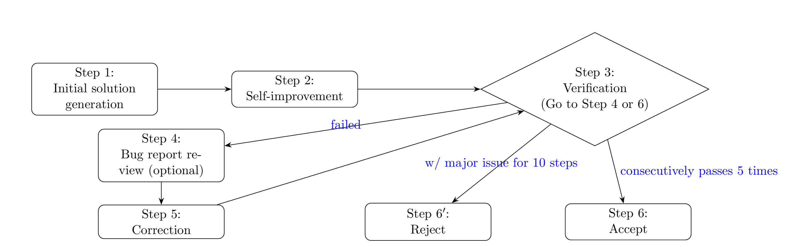

Accuracy and Scaling for
AI for Mathematics
via
(Auto)formalization
Siddhartha Gadgil
Department of Mathematics
Indian Institute of Science, Bangalore
- AI systems have shown impressive capabilities in Mathematical reasoning, including a Gold medal score at the IMO, and have become genuinely helpful in mathematical research.
- However, they still have (related) limitations:
- Accuracy: in mathematics errors cascade.
- Autonomy: as they need human verification.
- Scalability: limited by needing human guidance.
- An approach is to use a Formal Proof System for verification, and Autoformalization as a bridge.
- We discuss tools and environments for both Formalization and Mathematical Discovery.
AI for Mathematics
A Snapshot
IMO Gold for AI
- In IMO 2025, a version of Gemini DeepThink got an IMO Gold medal score, following standard timings and graded by the official graders.
- Another Gold Medal performance was announced earlier by OpenAI.
- These were both general purpose reasoning AIs and did not use a formal system for verification.
- A Gold medal level performance including formalization in Lean was announced by Harmonic.
- Another Gold Medal performance was achieved using an agentic workflow by Huang-Yang.
Some more advanced problems
- Suppose $f: \mathbb{R} \to\mathbb{R}$ is a smooth function such the $f''(x)>0$ for all $x\in\mathbb{R}$, then $f$ is not bounded above.
- Suppose $X$, $Y$ and $Z$ are independent random variables such that $X\sim N(1,1)$, $Y\sim Beta(2,2)$ and $Z\sim Uniform[0,3]$. Find $P(X+Y>Z)$.
- Find all $2 \times 2$ matrices with rational entries such that $A^5 = I$.
- Models up to GPT-4 struggled with these questions, but today's models can solve them.
AI for Research Mathematics
- Mathematicians now routinely chat with AI systems.
- AI systems time-to-time prove lemmas the mathematicians failed to prove, give counterexamples to overoptimistic statements etc.
- In some cases, this has led to new mathematics solving open problems.
- Typically, the user feels they could have solved the problem themselves. So far, probably no AI system has produced a mind-boggling proof.
- Further, mathematics from AI is often inaccurate.
AI Systems for special problems
- Often the core of a mathematical result is a special problem or construction.
- For example, Viazovska's work on sphere-packing problem relies on the construction of a "magic" special function using the theory of modular forms.
- Similarly, an entropy function had a crucial role in Perelman's work on the Poincaré conjecture.
- AI Systems like AlphaEvolve and PatternBoost allow construction of such functions.
- Systems like SAT/SMT Solvers and Resolution Theorem Provers can also solve special problems.
- Yichen Huang and Lin F. Yang used AI in a loop to solve IMO 2025 problems.

- With Gemini-2.5-pro, GPT-5 and Grok-4 they got Gold Medal level scores!
"Agentic" AI for Research Mathematics
- We would like to have an agentic system, i.e., a system running in loops, for research mathematics.
- This will need to be more complex than an IMO system — for instance we study the literature.
- While inspecting proofs using LLMs will work to some extent, it is likely that verification by a formal proof system like Lean will be needed.
- Lean will also organise accumulating knowledge and give information such as proof failures.
- Further, Lean verification will help in acceptance.
- AI is likely to generate better ideas this way.
LeanAide:
Design and Implementation
- We want environments and tools for:
- Formalization in Lean using AI.
- Mathematical discovery using AI and Lean, with knowledge of Lean not necessary but usable.
- These should have the following features:
- Integrate well with workflows.
- Extensibility.
- Modularity, with components replaceable.
- Incremental usefulness, from occasionally helpful to even fully autonomous.
- Interactivity, allowing users to guide and interact with the system.
Mathematical Reasoning loop
-
Problem Deconstruction & Formalization: Hypothesis and Conclusion, Definitions etc.
-
Problem Inspection: Easy, Hard, or Study first?
-
Source Material Analysis: If studying a source first.
-
Strategy & Plan Generation: Come up with Proof Sketch and Auxiliary Questions.
-
Step-by-step Execution: Execute the plan.
-
Verification, Formalization & Critical Analysis.
-
Meta-cognition and loop control: Manage the reasoning process and make adjustments.
- LLM Steps: prompt templates and output schemas.
Example Queries
-
While analysing a source:
- List theorems with structure.
- Structural Mapping: What is used where.
- Stress-test hypothesis: Construct a counterexample without this hypothesis, see where the argument fails.
-
While generating a plan:
- Forward reasoning: Consequences of hypotheses.
- Backward reasoning.
- Brainstorm techniques.
- Simplify or specialize the problem.
AutoFormalization: Ingredients and Stages
-
Formalize statements and definitions using an LLM given examples with results filtered (local step).
-
Generate/Rewrite proofs or documents in a formalization-friendly style.
-
Generate a structured JSON representation of the mathematical text according to a formal schema.
-
Translate iteratively into Lean code, using:
- Translation of statements and definitions.
- Lean meta-programming to build Lean code from Lean theorems and definitions.
- Automation to complete proofs.
Example: Formalizing a simple theorem
- Theorem: Let $(a_n)$ be a sequence defined by $a_0=c$ and $a_{n+1} = a_n$ for all $n$.
Then $a_n = c$ for all $n$.
- Proof: (LLM Generated)
- By induction
- Base case: $a_0=c$ by definition.
- Inductive step: if $a_n=c$, then $a_{n+1}=a_n=c$.
- Thus $a_n=c$ for all $n$.
Formalized Theorem JSON Representation
{
"document": {
"type": "document",
"body": [
{
"type": "Theorem",
"header": "Theorem",
"label": "thm:constant_sequence",
"hypothesis": [
{
"type": "let_statement",
"variable_name": "(a_n)",
"statement": "Let $(a_n)$ be a sequence
defined by $a_0=c$ and $a_{n+1} = a_n$ for all $n$."
}
],
"claim": "$a_n = c$ for all $n$.",
"proof": [
{
"type": "induction_proof",
"on": "n",
"base_case_proof": [
{
"type": "assert_statement",
"claim": "$a_0 = c$",
"proof_method": "by definition"
}
],
"induction_step_proof": [
{
"type": "assume_statement",
"assumption": "Assume $a_n = c$."
},
{
"type": "calculation",
"inline_calculation": "a_{n+1} = a_n = c",
"calculation_sequence": [
"a_{n+1} = a_n",
"= c"
]
}
]
},
{
"type": "conclude_statement",
"claim": "Thus $a_n = c$ for all $n$."
}
]
}
]
}
}
Formalized Theorem in Lean
theorem constant_seq_eq_of_const_init :
∀ {α : Type u} (c : α) (a : ℕ → α),
a 0 = c → (∀ (n : ℕ), a (n + 1) = a n) →
∀ (n : ℕ), a n = c :=
by
intro α c a a_18193650970466190054 a_18068984259474765511 n
induction n with
| zero =>
grind only
| succ n ih =>
grind only
done
Example: Case Analysis
"theorem" : {
"claim" : "∀ n : ℕ, n = 1 ∨ n = 2 → n < 3",
"proof" : {"multi-condition_cases_proof" : {
"on" : "n",
"proof_cases" : [
{"condition" : "n = 1", "proof" : []},
{"condition" : "n = 2", "proof" : []}
]}}}
theorem nat_eq_one_or_eq_two_imp_lt_three : ∀ (n : ℕ),
n = 1 ∨ n = 2 → n < 3 := by
intro n a_12668439849020315063
if condition_15952715909003343985 : n = 1 then
grind only
else
if condition_1530173634913780371 : n = 2 then
grind only
else
grind only
done
Implementation of Autoformalization
- Autoformalization of statements/definitions is done by finding and adding related examples to the prompt and filtering by elaboration.
- The translation from JSON to Lean code is done by recursively calling functions with an attribute adding them to an environment extension.
@[codegen "induction_proof"]
def inductionCode (translator : CodeGenerator := {}) :
Option MVarId → (kind: SyntaxNodeKinds) → Json →
TranslateM (Option (TSyntax kind))
| some goal, ``tacticSeq, js => ...
- The JSON schema is similarly extensible.
Improving Autoformalization
- For failures in translation of statements/definitions, we can recognize errors and fix in Lean (for example
∃! x y : Nat, ...) or with LLM help (for example ∃ [G: Group], ...).
- For documents,we must recognize common names, and also extract variables from existence claims etc.
- In case automation cannot complete proofs, we can iterate with LLM queries that may be refined (example for the
use tactic).
- We should refine the schema and implement code generators for better handling calculations etc.
-
LeanAide can be used from within Lean using its syntax,
TryThis widgets etc.
-
A server-client architecture means only a single dependency-free Lean dependency is needed.
-
We also (will) have web clients and bots.
-
Specifically, we will have a chat and canvas interface to LLMs, with query-templates, autoformalization etc to help in mathematical discovery.
- How much value is added by incorporating LeanAide will depend on the quality of autoformalization.
- Many improvements will be free – better AI and better automation in Lean 😀.